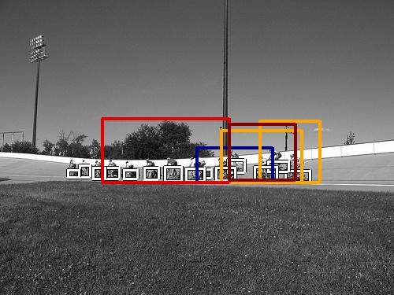

0.450440

0.465368

0.588288

0.732428

0.751055

0.845693

0.846362

0.847395

0.870538

0.877053
| Target image | 0.450440 | 0.465368 | 0.588288 | 0.732428 | 0.751055 | 0.845693 | 0.846362 | 0.847395 | 0.870538 | 0.877053 |
| Target image  |  3365.581543 |  3067.930420 |  2948.418457 |  2524.553955 |  2404.601318 |  2364.250732 |  2189.439209 |  2183.574707 |  2157.955078 |  2118.853271 |
Target image |  10445.616211 |  9634.946289 |  5128.816406 |  5071.755371 |  4550.939453 |  3789.216309 |  3696.857178 |  3300.145264 |  3010.597656 |  2969.448486 |
Target image |  4784.821289 |  3057.690430 |  2863.836182 |  2331.679443 |  1411.140503 |  1333.810303 |  1187.924805 |  1108.508179 |  727.179688 |  670.113586 |
Target image |  907.069763 |  780.668457 |  727.781433 |  696.431641 |  686.432190 |  638.931274 |  606.501709 |  582.119202 |  544.985657 |  541.505066 |